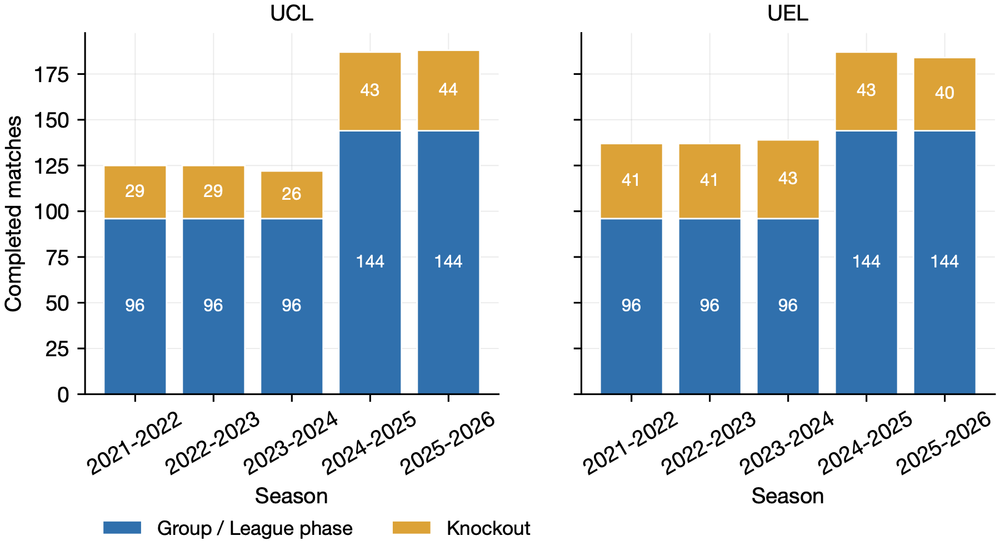
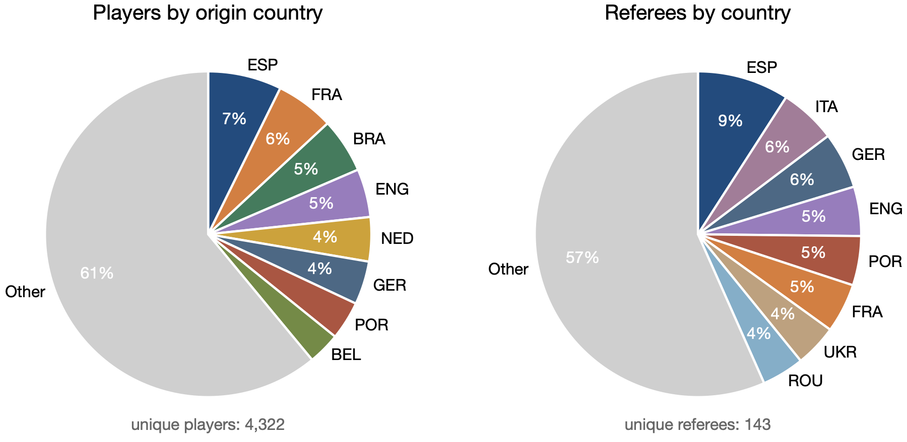
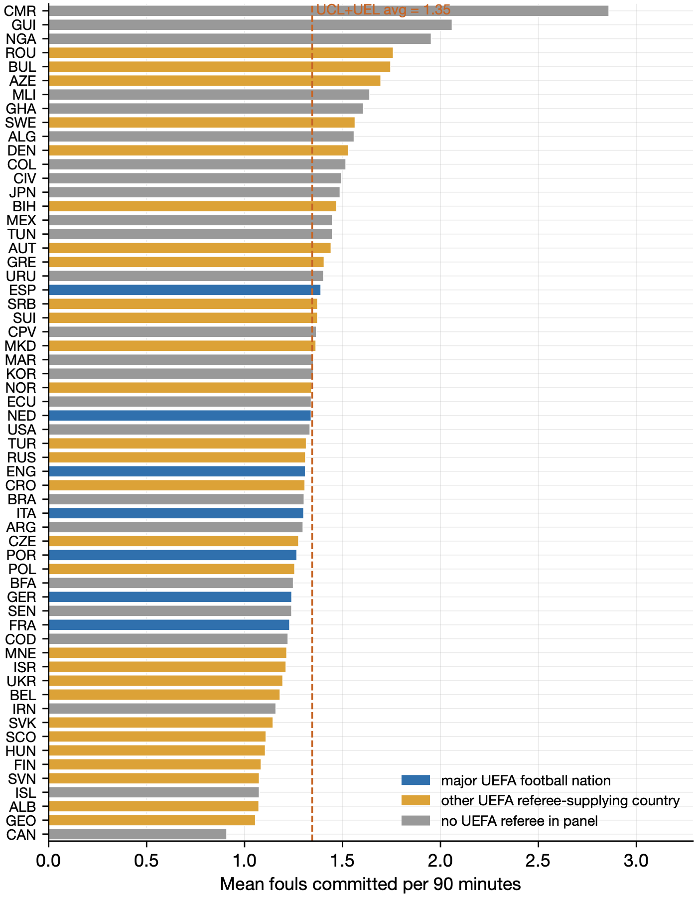
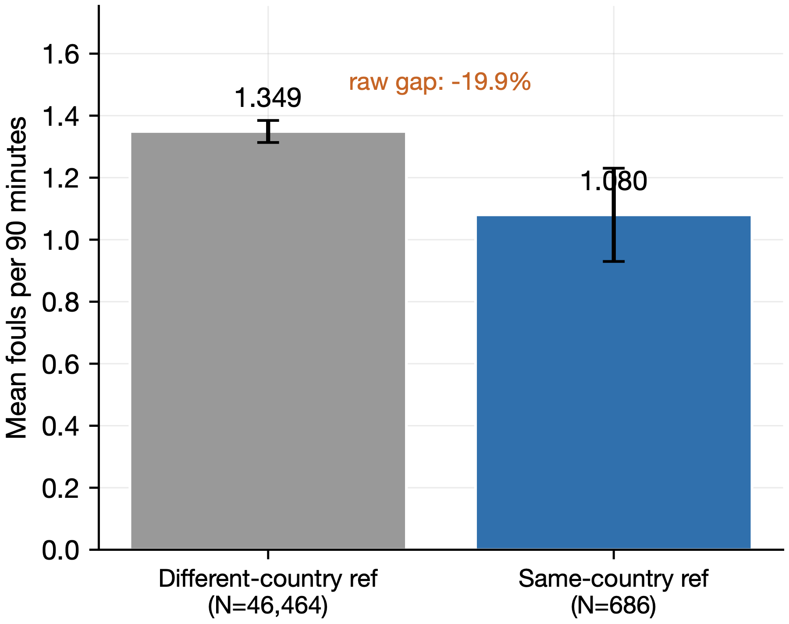
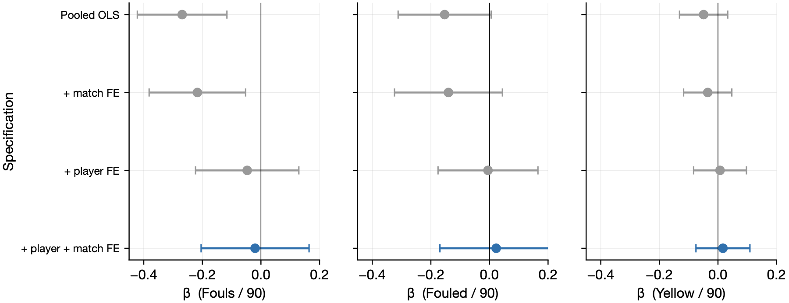
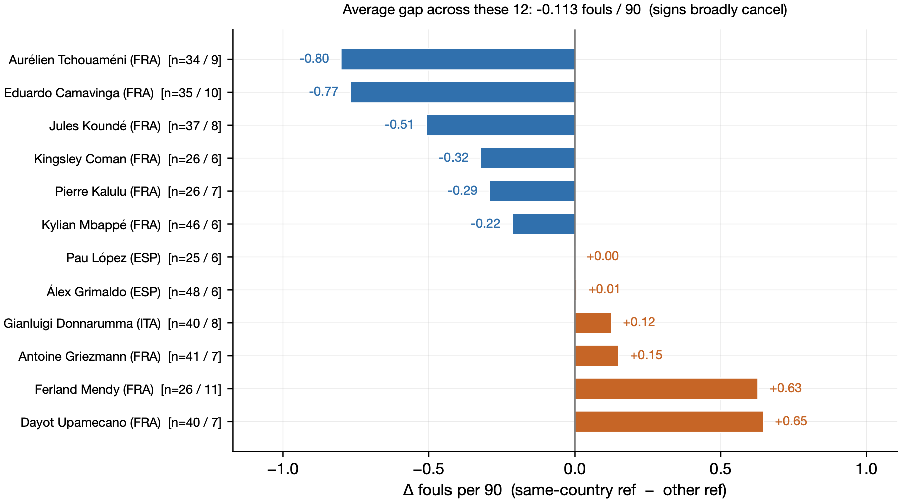
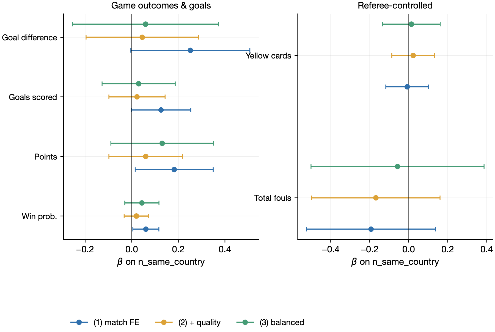
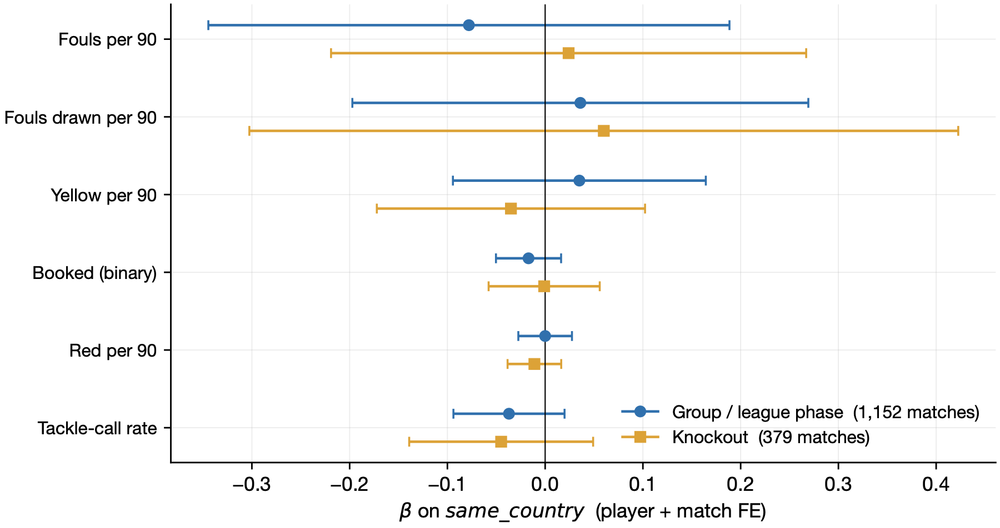
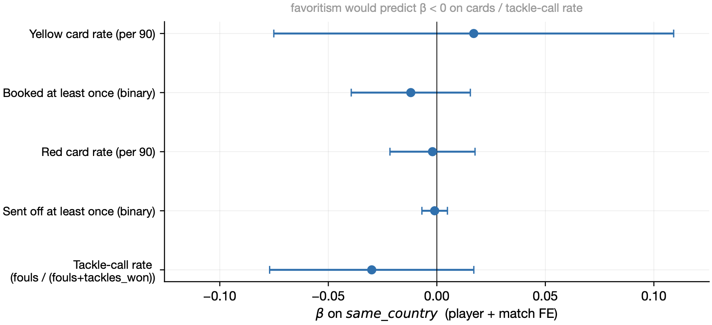

Do UEFA Referees Favor Players From Their Own Country? An Econometric Look at Five Seasons of Champions League and Europa League
Motivation
On May 6, 2026, Bayern Munich and Paris Saint-Germain met in the second leg of their UEFA Champions League semifinal. The match was officiated by João Pinheiro, a Portuguese referee. Two contentious calls late in the game went against Bayern, and the players who escaped them — Nuno Mendes and João Neves — were both Portuguese internationals. (PSG also fielded a third Portuguese starter, Vitinha.) The next morning, message boards lit up with the same suspicion fans have raised for decades: did the referee just favor his countrymen?
The question is empirically tractable, and the data needed to answer it are surprisingly available. This essay reports an attempt to answer it with five seasons of UEFA Champions League and UEFA Europa League data. The short version of the answer is no, on any margin we can measure. The longer version is more interesting: a naive comparison does suggest favoritism, but the apparent effect dissolves once we account for who the same-country players actually are. The post is partly a result, partly a worked example of why descriptive comparisons can mislead.
Data
The sample is every completed UCL and UEL match from the 2021-22 season through 2025-26 (panel through 2026-05-07): 1,531 matches, 143 unique referees from 44 countries, and 47,151 player-match records spanning 4,330 unique players from 125 countries (Figure 1). For each match I have the referee’s name, both teams’ rosters, and per-player counts of fouls committed, fouls drawn, yellow cards, red cards, tackles won, interceptions, and minutes played.
Match data are from FBref (Sports Reference), which exposes a structured per-team summary table inside each match report. Referee nationalities are from Wikidata, supplemented by a hand-curated overrides file for cases Wikidata couldn’t disambiguate (mainly UK referees, whose Wikidata entry returns “United Kingdom” but whose UEFA classification is England, Scotland, Wales, or Northern Ireland; and short-form Spanish names whose Wikidata entry uses the full name). Player nationality is the FIFA-style three-letter code that FBref displays in match reports — the same code the player’s national team would use.

The treatment variable for the player-level analysis is same_country — an indicator equal to 1 when a player’s nationality matches the referee’s country, and 0 otherwise. In the 47,151 player-matches, 686 (1.5%) are same-country observations.
A useful caveat about the data-generating process: UEFA’s match-officiating department explicitly avoids assigning a referee to a match between clubs from the referee’s own country. So for any given match, neither team’s home country is the referee’s. Same-country players still appear (a Portuguese midfielder for PSG; a French defender for Real Madrid), and that’s the variation this study uses.

The two pies are dominated by the same five countries — Spain, France, Germany, England, and Portugal — which together supply about a third of all players and roughly two-fifths of all referees in the panel. But the asymmetry on the edges is what matters for this study. Brazil supplies 5% of the players and zero referees in our 5-season panel; the Netherlands and Belgium each supply 4–5% of the players but only a handful of referees; conversely, Romania, Ukraine, and Turkey are visible on the referee pie but barely show up in the player pie. Because UCL/UEL referees come overwhelmingly from a smaller subset of countries, roughly 28% of all player-matches in this panel come from a nationality that never supplied a UEFA referee in 2021–26 (Brazilian, Argentine, Moroccan, Nigerian, Ivorian, Uruguayan, Senegalese, and US players make up most of this group). For these players the same-country cell is a structural impossibility — they appear only on the “different-country” side of the comparison. The set of players who can ever be in the same-country cell is, by construction, dominated by the major UEFA football nations.
Descriptive evidence
The average UCL/UEL player commits 1.345 fouls per 90 minutes. There is substantial heterogeneity by nationality (Figure 3): Cameroonian players in our sample average 2.86 fouls per 90, while Canadians average 0.91 — a 3× spread that mostly reflects which playing styles dominate which national-team pipelines. Crucially, the major UEFA football nations cluster near the average: Spain 1.39, the Netherlands 1.34, England 1.31, Italy 1.30, Portugal 1.27, Germany 1.24, France 1.23. They are neither the most nor the least foul-prone groups in football.

Pooling all 47,150 player-matches with positive minutes and splitting on same_country, same-country players commit roughly 20% fewer fouls per 90 minutes than other players (Figure 4). At first read, that looks like exactly the favoritism pattern fans suspect.

But this comparison is contaminated by something obvious in retrospect: it is comparing different sets of players, not the same player under different conditions. Players who appear in the “same-country” cell are systematically the players whose nationality is shared by a UEFA-Elite referee — overwhelmingly Spanish, German, French, Italian, English, Portuguese, and Dutch. Those are also the nationalities most over-represented at top clubs. Top-club starters tend to be technical, possession-style players who commit fewer fouls under any referee. The descriptive gap could be driven entirely by who plays in the same-country matches, not by any change in referee behavior.
To separate “who” from “what the referee does,” we need within-player variation.
Identification: a panel fixed-effect specification
The natural causal-inference framing here is a panel fixed-effect model. Letting i index players and m index matches:
yi,m = αi + γm + β · SameCountryi,m + εi,m
The coefficient of interest is β. The two fixed effects absorb the obvious confounds:
- αi (player FE) absorbs every time-invariant trait of the player — his typical foul rate, position, age (within-season), club’s tactical style, his propensity to slide-tackle, and so on. The remaining variation in
SameCountryfor player i comes from which referees he draws across his matches: a Spanish midfielder is “treated” in matches with Spanish referees and “untreated” otherwise. - γm (match FE) absorbs every match-level shock — the referee’s individual leniency, the stage of the competition, the venue, the temperature, both teams’ identities, anything common to both sides of a single match. Within a match, the same-country variation is across players: in a Spanish-refereed game, three Spanish players are “treated” and the other 25 or so on the pitch are not.
Standard errors are two-way clustered at (player, match): match clustering accommodates correlation across players within a chippy game, player clustering accommodates correlation in a player’s behavior across his own matches. The treatment status varies match-by-match for each player — we identify β from the same player’s switching between matches with same-country and other-country referees, and from the within-match contrast between same-country and other players in the same fixture. A separate “control group” of matches with no same-country players would be a poor control because those matches involve different clubs: smaller clubs with less internationally diverse rosters, in fixtures with systematically different team strength. The within-player comparison sidesteps this entirely.
Player-level results
Figure 5 reports β on SameCountry for three outcomes — fouls per 90, fouls drawn per 90, yellow cards per 90 — across four progressively tighter specifications.

same_country across specifications. Error bars are 95% confidence intervals; standard errors two-way clustered at (player, match).The pattern is clean. The pooled OLS recovers the descriptive 20% gap on fouls (β = −0.27, p < 0.01). Adding match fixed effects barely changes it (β = −0.22, still significant). Adding player fixed effects alone collapses the coefficient to −0.05 with a standard error of 0.09 — statistically indistinguishable from zero. The full two-way fixed-effect specification gives β = −0.020 (SE = 0.094); the 95% confidence interval [−0.20, +0.16] excludes any effect larger than ±15% of the mean foul rate.
The same pattern holds for fouls drawn (any benefit-of-the-doubt on contact in the player’s favor) and for yellow cards: the descriptive gap collapses entirely once player FE are introduced. The 20% gap is selection on which players appear in the same-country cell, not refereeing.
Figure 6 illustrates the within-player decomposition concretely. For each of 12 players who have at least three same-country matches and at least five other-country matches in the panel, the bar shows the difference between his average fouls per 90 in same-country matches and his average elsewhere. Six players show “favoritism direction” (Tchouaméni −0.80, Camavinga −0.77, Koundé −0.51, …); six show the opposite (Donnarumma +0.12, Griezmann +0.15, Mendy +0.63, Upamecano +0.65). The average gap across these 12 players is +0.11 — essentially zero. The signs cancel. Some players really are called for fewer fouls under their countryman; equally many are called for more. There is no systematic effect.

Are same-country players awarded more fouls?
So far the analysis has focused on fouls committed by same-country players. But favoritism could also work in the other direction: a referee who quietly favors his countrymen might be quicker to whistle their opponents for contact — awarding the same-country player a free kick, or upgrading a hard tackle to a yellow card. The hypothesis is symmetric: favoritism predicts a same-country player should commit fewer fouls and draw more fouls. Under that hypothesis the coefficient on SameCountry for fouls drawn per 90 (FBref’s fouled) should be positive.
The middle panel of Figure 5 already shows this regression. The descriptive comparison (top of the panel, “Pooled OLS”) actually runs in the opposite direction of favoritism: same-country players draw slightly fewer fouls than other players in the raw means (β = −0.15, marginally significant). That’s once again selection on whom we’re comparing — technical, possession-style players from top clubs hold the ball less and don’t invite contact the way a counter-attacking forward does. With player FE the descriptive gap goes to zero (β = −0.005, SE 0.087); with the full two-way fixed effects it flips slightly positive (+0.023, SE 0.098) but is statistically indistinguishable from zero. The 95% confidence interval at the strictest spec is roughly [−0.17, +0.21], which rules out a same-country “more fouls awarded” effect larger than about 18% of the mean rate.
Yellow and red cards point the same way. The yellow-card panel of Figure 5 has β = +0.017 per 90 (SE 0.047) under the 2WFE; reds are basically immeasurable at that rate, with β = −0.002 (SE 0.010). If favoritism worked through cards-for-contact — opponents getting booked more readily for fouling on a same-country player — the implied effects are too small to find.
Combining this section with the previous one: neither side of the symmetric favoritism hypothesis has support in the data. Same-country players are not whistled less when they make contact, and they are not awarded more fouls when contact is made on them. The 20% raw foul gap is a player-selection artifact, and the symmetric “fouls drawn” story doesn’t survive in the data either.
Team-level results
A natural follow-up question: even if no individual player is favored, perhaps a team with several same-country players accumulates a small overall edge. The team-level analog of the player-level analysis regresses team-match outcomes (won, points, total fouls, total cards) on n_same_country, the count of the team’s players who share nationality with the referee. The within-match comparison — the team with more same-country players vs. the team with fewer, in the same fixture — is what match fixed effects deliver. But it isn’t enough. Top UCL/UEL clubs (Real Madrid, Manchester City, PSG, Bayern, Liverpool, Inter) have multinational rosters drawing heavily from the major UEFA football nations — exactly the nations that supply most UEFA referees. Smaller clubs have more locally sourced rosters. So within any given match, the team with more same-country players is, on average, the better-staffed side, and that quality differential varies across the two team rows of the match (match FE cannot absorb it).
To test this directly, I add a leave-one-out club win-rate as a strength control: for each (team, match) row, I compute the team’s win rate across all other matches in our 5-season UCL/UEL panel — a within-sample analogue of the UEFA Club Coefficient. I also run a balanced subsample, restricting to matches where the two teams’ panel win rates are within the median absolute difference. Both adjustments produce the same answer (Figure 7).
Specification (1) shows a within-match win-rate advantage of about 6 percentage points per extra same-country player. Specification (2), adding the leave-one-out quality control, collapses it to a third of that, with a standard error that engulfs zero. The balanced subsample (3) is similarly null. The same pattern holds for goals scored and goal difference — quantities the referee can’t directly produce, which would not be expected to move under genuine refereeing favoritism — suggesting that the apparent (1) effect was always squad quality showing through, never a referee channel. Outcomes the referee does produce (fouls, yellow cards, red cards) are statistically zero in every specification.

n_same_country across three specifications: (1) within-match comparison only, (2) adding the team’s leave-one-out panel win rate as a quality proxy, (3) restricting to balanced matches. Outcomes the referee directly produces (right panel) show no systematic effect under any specification. Outcomes the referee mostly cannot produce (left panel) appear under (1), then collapse under (2) and (3) once team strength is held fixed.Group stage vs knockout rounds
One natural worry: maybe favoritism only surfaces in high-stakes games — the knockout rounds, where a single decision can end a season. The 1,531 matches split into 1,152 group / league-phase fixtures and 379 knockout fixtures (Round of 16 onward, plus the Swiss-format knockout play-offs). Splitting the player-level two-way FE specification on this distinction (Figure 8):

same_country in the group / league-phase subsample (1,152 matches, blue circles) versus the knockout subsample (379 matches, orange squares). Whiskers are 95% confidence intervals. Standard errors two-way clustered at (player, match). The two stages produce statistically indistinguishable estimates on every outcome.No sign of differential favoritism in knockouts. Every knockout coefficient is within one standard error of zero, and the formal interaction test (a single panel with same_country × is_knockout) yields an interaction coefficient indistinguishable from zero on every outcome. The knockout point estimates lean very slightly in the favoritism direction for cards (red −0.011, yellow −0.035) but the standard errors are too wide to call. With ~240 same-country observations in knockouts, we would only detect effects roughly twice as large as our group-stage detection threshold; any subtle KO-only favoritism is below it. The team-level robustness specifications, run separately on each subsample, also collapse to null in both stages once club strength is held fixed.
What about subjective decisions only?
A reasonable fallback hypothesis: refs may not change total fouls — those are mostly clear contacts that any reasonable referee would whistle — but they might shade the discretionary decisions. To test this on what the data allows, I re-ran the player-level 2WFE on the most discretionary outcomes available: yellow-card rate, the binary “had a yellow,” red-card rate, the binary “had a red,” and the tackle-call rate (fouls / (fouls + tackles_won) — the share of attempted defensive actions whistled as fouls). I also split the sample by stage type (group/league phase vs. knockout rounds), since one might expect favoritism to surface where stakes are highest.
None of these moves the picture (Figure 9). Every coefficient’s 95% confidence interval comfortably crosses zero, on every outcome. The knockout-only subsample (379 matches) gives the same null as the full panel, with somewhat larger standard errors due to the smaller cell size. There is no statistically detectable favoritism on the discretionary margin either, in either stage of the competition.

same_country for the most discretionary outcomes available: yellow- and red-card rates (and their binary “had a card” analogues), plus the tackle-call rate (the share of attempted defensive actions whistled as fouls). Whiskers are 95% confidence intervals; standard errors two-way clustered at (player, match). Favoritism would predict negative coefficients on cards and on the tackle-call rate; the data do not.The data we have don’t include penalty awards or “advantage played” calls — those would be the cleanest tests. A future extension using a source that exposes these (FotMob, API-Football, or a manual coding of match commentary) would close that gap. But for everything FBref shows, the answer is the same.
Limitations
A few caveats that should temper the strength of the conclusion:
- The data don’t capture penalty awards or advantage decisions. These are the most discretionary calls a referee makes, and the most plausible channel for favoritism if it exists.
- Same-country at the match-officials level is not tested. Some controversial calls involve VAR or AR1/AR2, who are also identifiable from the match meta. If favoritism exists, it might be at the team-of-officials level, not just the head referee. A panel that codes any-match-official-shares-nationality would be more powerful.
- Referee assignment is not fully random. UEFA balances referee experience against match importance, so a Slavko Vinčič or a Clément Turpin disproportionately referees high-stakes matches. This affects the level of foul rates we observe but not the within-player or within-match contrasts we use for identification.
Conclusion
Five seasons of UEFA Champions League and Europa League data — 1,531 matches, 4,330 players, 143 referees — show no statistically detectable evidence that referees call fewer fouls on, or award more fouls to, players from their own country. The 20% descriptive gap that appears in raw means is a selection artifact: same-country players are disproportionately the kind of players (top-club starters from major football nations) who commit fewer fouls under any referee. Once you compare the same player to himself across matches with different referees, the gap is gone. A team-level “more same-country players → more wins” effect appears at first but is fully explained by squad quality once we control for it.
The Bayern–PSG anecdote is real; the controversial calls happened. But in the broader sample, those calls don’t add up to a systematic pattern, and the apparent fan-eye pattern is an artifact of which kinds of players are eligible to be in the same-country cell at all. If there is favoritism, it lives in the channels we can’t measure — penalty awards, advantage played, the soft yellows you can argue about — and a future iteration of this exercise might find it. For now, the more interesting story is methodological: how easily a 20% raw gap dissolves once you account for whom you’re actually comparing.